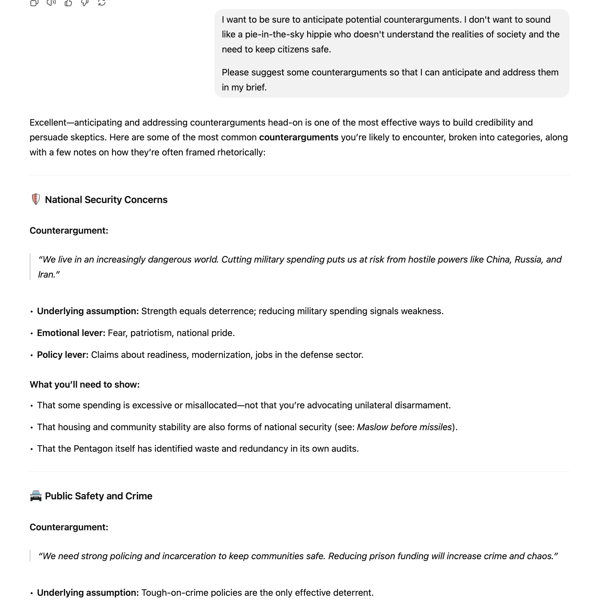
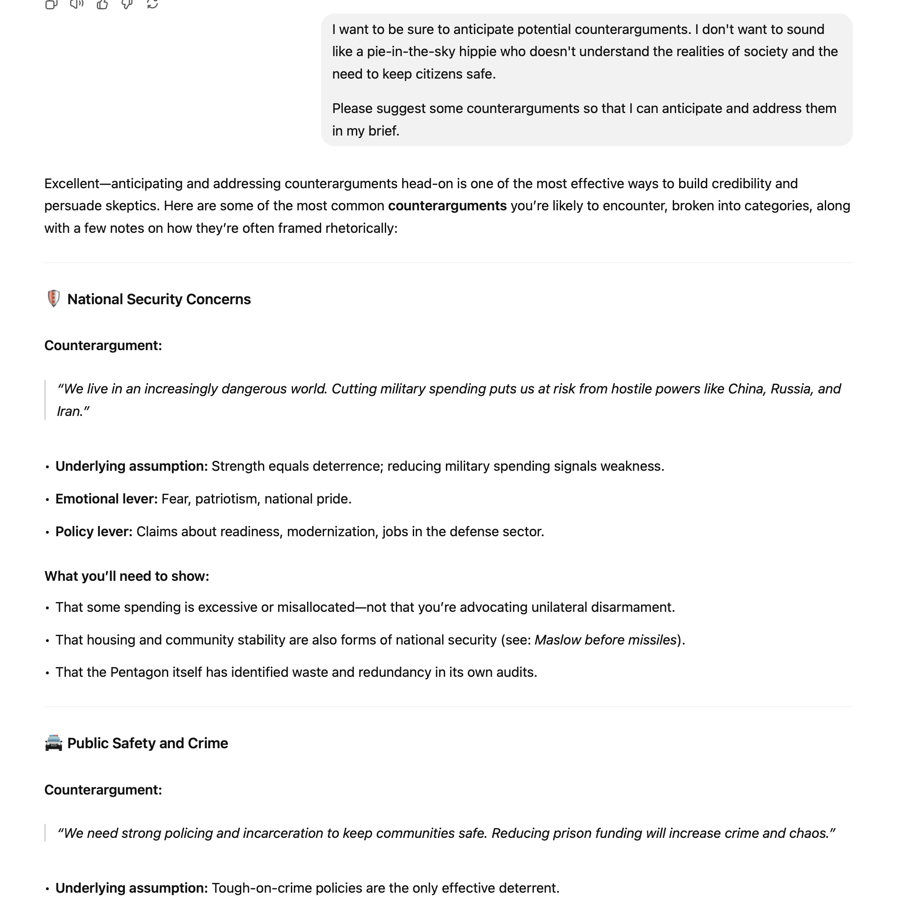
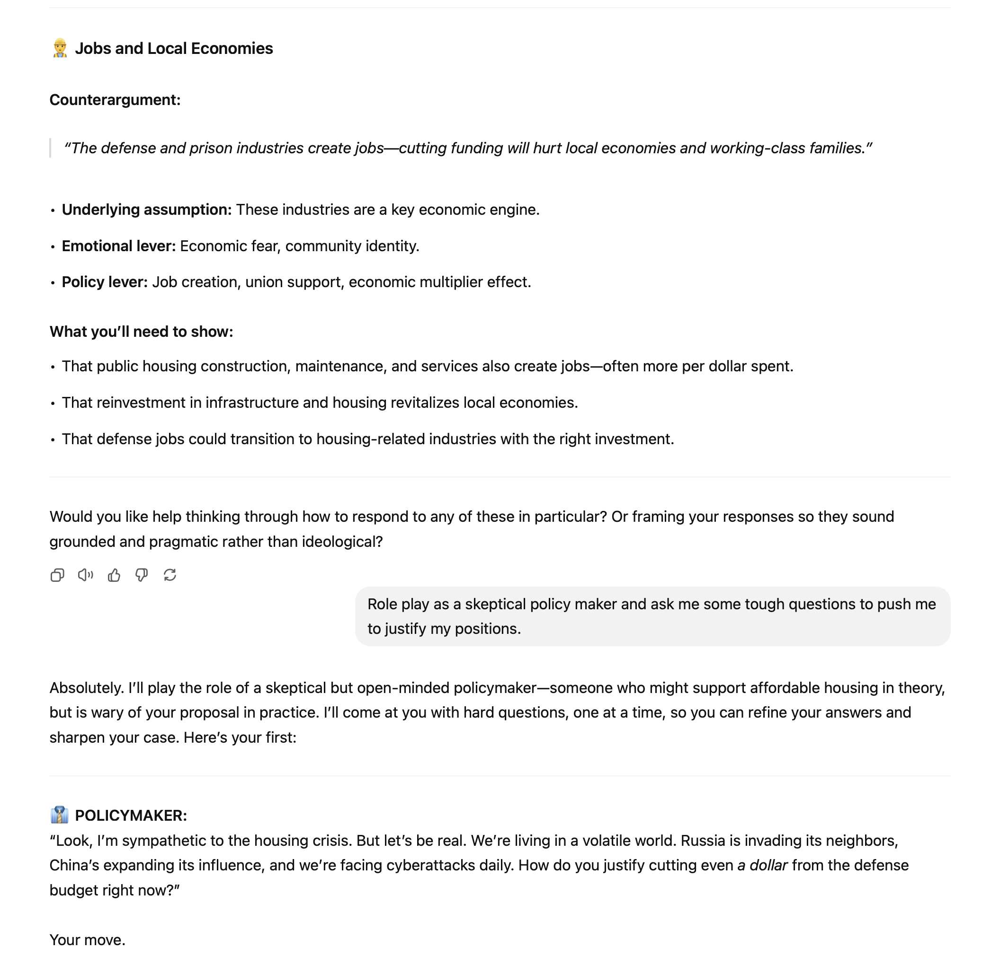
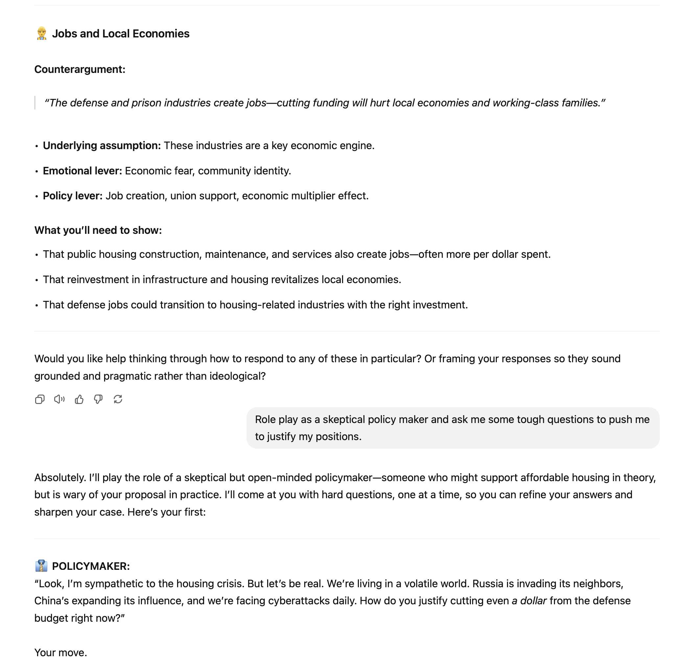

Writing a policy brief
I spoke to a group of students at Simon Fraser University. They asked about how to use ChatGPT to support them in writing policy briefs without having it generate the article for them.
Megan MacKenzie
That’s really helpful.
Sunjay, I have a question that kind of links this. A lot of the writing we’re doing is not creative. It’s not really fulfilling our own goals.
It’s for a professor, or it’s for… So, we’re writing policy briefs in this context. And I wonder if you can give us some ideas of the prompts we could generate to think about how to improve the writing for the audience.
We’re thinking about the difference with the creative writing process and how you get feedback.
But what happens when you’re writing not in a creative context? When you’re writing with stricter boundaries, what are the kinds of prompts you might use with ChatGPT with that kind of writing?
Because we’re trying to foster our own voice. But most of the students here don’t get to write in their own voice very often, unless it’s for their personal use.
Sunjay Dixit
Give me an example of a writing assignment and what it might be that’s the kind of non-creative writing assignment that you might have.
Megan MacKenzie
So yeah, so the assignment that we’re working on now is really to create a policy brief. To try and convince a public audience first of all — but also try and convince a certain policy maker — everyone has a different audience — of how and why to reallocate a particular form of militarized spending.
So whether it’s F-35s, or money spent on the carceral system — and reallocate that to the issue they’ve been focusing on.
So whether that’s more nurses, or support for those with opioid addictions..
So everyone has a different issue they’ve been focusing on. Human security and enhanced human security, and we’re thinking of ways to reallocate militarized spending.
So they’re writing a policy brief, and then we’re going to write a social media post that’s a little bit more concise, because in the end, we’re trying to both influence policymakers, but also reach a public audience to say, “hey you can Think about military spending differently.”

Megan MacKenzie
Oh, you’re going to help us in real time!!
Sunjay Dixit
Yeah, exactly.
I might start by sitting stating my goal like that, right, and see what it says. it’s so already, it’s giving me an outline for balancing credibility and clarity with moral force and emotional resonance.
So this is what I would call, it’s helping me clarify my goals.
It’s saying, “OK, great. You want to convince them. One. Maybe you can do it by doing this I outlined for in spending on military, yeah, and it’s giving me an outline that I can use for the thing itself.”
 So at this point I might say like, “no, no stop. Do not write the opening paragraph. Please do not do any writing for me. I want all the ideas and the writing to come from me instead. Help me clarify I what the piece? What attributes the piece would need to have in order to can convince policy.”
So at this point I might say like, “no, no stop. Do not write the opening paragraph. Please do not do any writing for me. I want all the ideas and the writing to come from me instead. Help me clarify I what the piece? What attributes the piece would need to have in order to can convince policy.”
 So you can see, the default thing that ChatGPT might want to do is to jump in and do it for you. I have to clarify and tell it “Don’t do that, here’s what I want instead.”
So you can see, the default thing that ChatGPT might want to do is to jump in and do it for you. I have to clarify and tell it “Don’t do that, here’s what I want instead.”
 

 
OK, maybe this is helpful… “to influence policymakers and engage the public, your piece should have five core attributes, credibility. Need to trust your facts, anticipate counter arguments and feel that you’re serious. So by citing authoritative sources using precise numbers and comparisons, preempting objections.”

OK, maybe this is helpful… “to influence policymakers and engage the public, your piece should have five core attributes, credibility. Need to trust your facts, anticipate counter arguments and feel that you’re serious. So by citing authoritative sources using precise numbers and comparisons, preempting objections.”
So, that’s a good one. You never want the reader to feel like they’re smarter than you, and to read something that you wrote and be like, “Oh, yeah. Well, this person who wrote this is saying this, but what they didn’t think about is XYZ.” You don’t want that to happen.
You can say, “Hey, I know what you’re thinking. You’re probably thinking XYZ. Actually, that doesn’t apply. Here’s why.” Right? Anticipate those objections.
“Stay non-partisan, not just presenting new data, I’m shifting the mental frame. Reframe public housing as human security, essential to stability, safety in the social contract, moral clarity and so on.”
“Policy makers are humans too. Values move them, especially when those values are tied to national identity or fairness, political and economic feasibility. It’s not just pie in the sky, like I’m a hippie and like, I think we should all just be happy and love each other. No, this is actually plausible. This could happen. Here’s the specifics of the plan that’s actually achievable and strategic urgency. Action only happens when the status quo feels untenable.”
“What is the cost of inaction? Why is this so important? What’s what will happen if we don’t do this? What’s the cost?”
So this is helping me think about what’s going to make it good.
I would find that very helpful as a starting point in writing, and that’s a, hopefully a different approach than just getting it to write for you, which maybe is what it’s sort of would do by default.
Megan MacKenzie
That’s super helpful. And I think some of our concerns are the kind of obvious counter arguments to our reallocations in terms of credibility, feasibility… So I think that gives us some great suggestions for how to make prompts around like, “I’m concerned that this is going to seem pie in the sky or not credible or doable, can you identify those arguments so I can address them.”